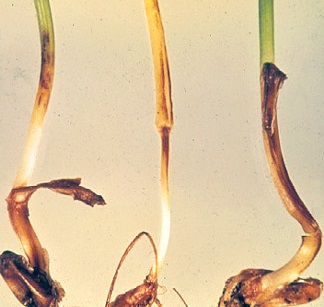
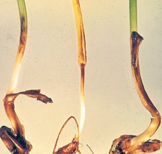

Болезни рапса
Снежная плесень (Fusarium mivale)

Описание:
Снежная плесень (Fusarium mivale) - возбудитель снежной плесени. Активно развивается при низких температурах воздуха от 1 до 10 градусов Цельсия.Болезнь проявляется после таяния снега. Инфекция сохраняется на растительных остатках в почве. В течение вегетации возбудитель распространяется конидиями воздушно-капельным путем.
Признаки заболевания/Повреждения:
Развитие снежной плесени происходит ранней весной: возбудитель заболевания сначала проходит фазу конидиального спороношения, а затем формируются сумкоспоры, располагающиеся в нижней части стебля. На этой стадии грибок разносится на соседние растения дождем, ветром и благодаря насекомым. На загнивших листьях, узле кущения нежный паутинистый налет белого или розового цвета. Спороношение имеет вид мелких бледно-розовых или оранжевых подушечек у основания стеблей. На поверхности отмерших листьев образуются бледно-розовые или оранжевые шарообразные плодовые тела диаметром 0,3 мм. Листья часто склеиваются и загнивают. Узел кущения разрушается.
Меры борьбы:
Обработка семян перед посевом протравителем разрешённым на культуре.


Корневые гнили (Fusarium, Helminthosporium)

Описание:
Инфекционное заболевание, вызываемое полупаразитными грибами из родов: Fusarium, Helminthosporium, Cercosporella и др. Инфекционное начало накапливается в почве (особенно при бессменном возделывании зерновых колосовых) на растительных остатках, иногда возможна передача инфекции семенами.
Признаки заболевания/Повреждения:
При благоприятных условиях происходит загнивание, разрушение крорневой и прикорневой части растений или поражается сосудистая система, в результате чего происходят угнетение растений, пожелтение и засыхание листьев, белостебельчатость, белоколосица,задержка колошения, щуплость зерна и пустоколосость, а также гибель продуктивных стеблей.
Меры борьбы:
Профилактика и борьба достигается путём обработки семян перед посевом. Качественное протравливание семян обеспечит надёжную защиту зерновых до фазы кущения.

 
